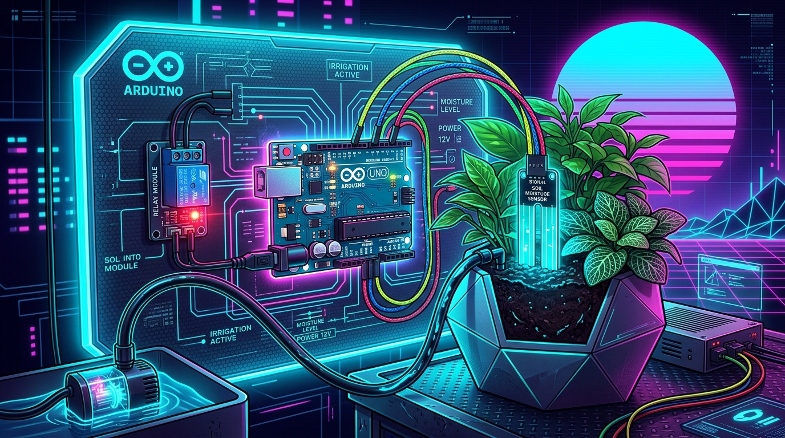
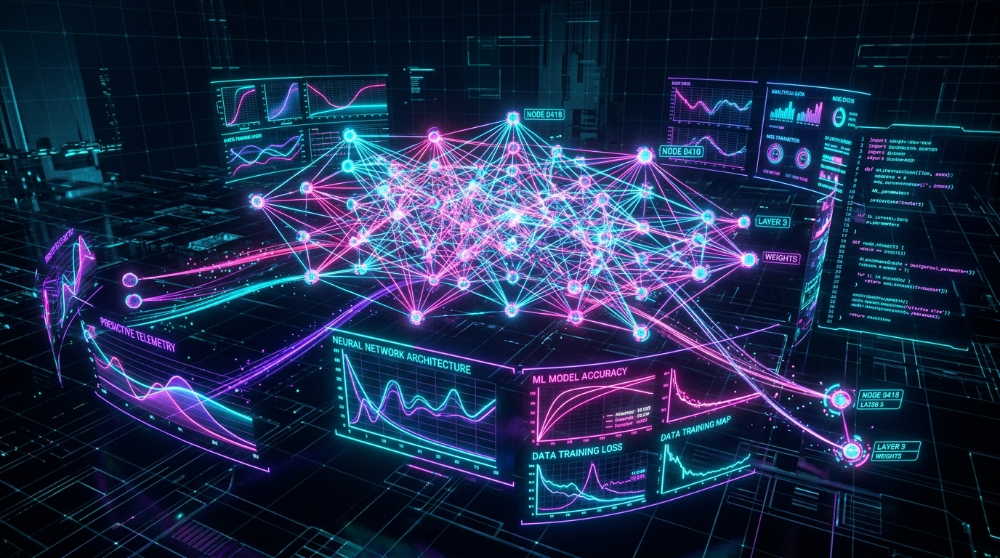

I'M KAVYA SHREE
Engineering intelligent systems and resilient software architectures through the synergy of machine learning, clean algorithmic design, and full-stack innovation.
// 02. PROFILE DOSSIER //
> Personal background, engineering philosophy, and career milestones.
Kavya Shree M D
Software Engineer & AI Specialist
Hello, I'm Kavya Shree M D
My name is Kavya Shree M D. I am currently pursuing my Bachelor of Engineering in Artificial Intelligence and Machine Learning at Adichunchanagiri Institute of Technology (AIT), Chikkamagaluru.
Driven by an analytical mindset and a genuine passion for scalable software engineering, I bridge the gap between machine learning intelligence and dependable software architecture. With solid foundations in Python, Java, C, and Data Structures & Algorithms, I enjoy dissecting complex engineering challenges and transforming them into elegant, production-grade solutions.
Career & Academic Highlights
-
>
B.E. in AI & ML (CGPA: 8.73): Academic excellence at Adichunchanagiri Institute of Technology.
-
>
Smart Irrigation System: Engineered an autonomous IoT soil moisture management platform optimizing agricultural water usage.
-
>
Python Bootcamp Graduate: Completed the intensive Student Development Program organized by Dept. of AI&ML, AIT (March 2026).
-
>
Infosys Springboard Certified: Verified certification in Introduction to Unix systems & shell commands.
-
>
Pre-University Distinction: Scored 94.5% at BGS PU College and 84.5% in 10th CBSE at MES School.
Personal Interests & Passions
-
>
Neural Models & Applied AI: Deep curiosity for experimenting with predictive algorithms, neural architectures, and automated intelligence.
-
>
Algorithmic Problem Solving: Continuous practice in Data Structures & Algorithms for low time and space complexity.
-
>
Unix & Systems Exploration: Fascinated by Linux environments, CLI tooling, scripting, and modular architecture.
-
>
Modern Web Engineering: Developing high-performance, accessible web interfaces infused with futuristic visual design.
-
>
Continuous Learning & Tech Communities: Enthusiastic about collaborative hackathons, peer learning, and tech seminars.
// 03. TECHNICAL MATRIX //
> Calibrated competencies across programming languages, algorithms, IoT, and AI architectures.
Core Languages
[SYNTAX.CORE]Algorithms & Core
[LOGIC.CORE]IoT & Arduino
[HARDWARE.DEV]AI & Machine Learning
[NEURAL.MATRIX]Systems & Tools
[TOOLING.OPS]Engineering Mindset
[AGILE.GROWTH]// 04. PROGRESSION TIMELINE //
> Educational roadmap, major engineering projects, and career milestones.
B.E. in Artificial Intelligence & Machine Learning
Currently pursuing 3rd semester in Bachelor of Engineering (Artificial Intelligence and Machine Learning) with a distinguished 8.73 CGPA. Developing specialized acumen in Data Structures & Algorithms, Object-Oriented Programming (Java & C), intelligent algorithms, and foundational machine learning architectures while engineering hands-on hardware and software prototypes.
Smart Irrigation System (IoT & Automation)
Engineered and deployed an automated smart agriculture irrigation control system utilizing capacitive soil moisture sensors and an Arduino microcontroller. Programmed intelligent threshold-based feedback logic that autonomously triggers water pump relays, mitigating crop water stress, minimizing power consumption, and eliminating water wastage.
Python Programming Bootcamp & Unix Certification
Accomplished an intensive Student Development Program (SDP) in Python Programming conducted by the Department of Artificial Intelligence and Machine Learning at AIT. Concurrently completed the official Infosys Springboard Certification in "Introduction to Unix", demonstrating rigorous understanding of shell scripting, POSIX file permissions, process commands, and Unix system operations.
12th Standard – Pre-University Course
Graduated with highest distinction scoring an outstanding 94.5%. Mastered rigorous analytical coursework in Physics, Chemistry, and Mathematics, cultivating acute scientific problem-solving abilities, mathematical rigor, and foundational logical principles preparatory for engineering studies.
10th Standard – Secondary School Education
Completed CBSE Secondary School Board Examinations with an 84.5% aggregate. Developed a deep-seated interest in sciences and quantitative mathematics, establishing disciplined study methodology and computer literacy that set the trajectory for an engineering career in Artificial Intelligence.
// 05. PROJECT ARCHIVES //
> Selected engineering initiatives, automated systems, and practical IoT prototypes.

Smart Irrigation System using IoT
Smart Irrigation System using IoT is an automated plant-watering system that monitors soil moisture and controls a water pump accordingly. The project uses Arduino Uno, a soil moisture sensor, and a relay module to provide efficient and automated irrigation while reducing unnecessary water usage.

AI Predictive Crop Analytics Engine
Machine learning predictive modeling suite engineered to analyze agricultural telemetry, soil hydration rates, ambient humidity, and weather patterns. Forecasts irrigation requirements and optimal water volume cycles to prevent root rot and maximize yield.
Unix Shell Automation & Pipeline Streamer
High-efficiency Unix and Linux shell automation framework developed following Infosys Springboard Unix certification. Handles autonomous system health polling, telemetry log compression, cron scheduling, and automated data synchronization scripts.
Cyberpunk & Synthwave Portfolio Nexus
Retro-futuristic portfolio platform engineered with semantic HTML5, CSS media queries for automatic dark/light theme switching, responsive vertical navigation drawer, and an embedded interactive Cyber Terminal Chatbot.
SMART IRRIGATION SYSTEM USING IoT // v1.4
> Autonomous Moisture-Driven Agricultural Automation Platform
Project Overview & Objective
Smart Irrigation System using IoT is an automated plant-watering system that monitors soil moisture and controls a water pump accordingly. The project uses Arduino Uno, a soil moisture sensor, and a relay module to provide efficient and automated irrigation while reducing unnecessary water usage. By continually polling soil resistance, the system ensures crops and plants receive optimal hydration without human intervention while conserving up to 60% of water.
Hardware & Circuit Component Matrix
Control Logic & Threshold Algorithm
AI PREDICTIVE CROP ANALYTICS ENGINE // v1.2
> Multi-Variable Telemetry Predictive Modeling Pipeline
Project Overview & Objective
Trained machine learning models to forecast upcoming soil dryness by correlating historical moisture depletion against ambient temperatures, humidity, and solar intensity. Eliminates reactive watering by pre-empting crop water stress.
Model Pipeline Architecture
UNIX SHELL AUTOMATION & TELEMETRY STREAMER
> POSIX Pipeline Automation & System Health Monitoring
Project Overview & Objective
Built during and after the Infosys Springboard Unix certification, this automation suite processes continuous serial sensor streams, archives hourly metrics into compressed tarballs, and transmits alert packets if moisture parameters drop below safety thresholds.
Sample Cron Dispatcher & Telemetry Streamer
CYBERPUNK & SYNTHWAVE PORTFOLIO NEXUS
> Semantic Architecture, Theme Detection Engine & AI Chatbot
Project Overview & Objective
Engineered an immersive web portal reflecting the developer's passion for Artificial Intelligence, system architecture, and retro-futuristic synthwave aesthetics. Incorporates CSS media query theme detection, interactive progression timeline, left vertical navigation bar with scrollspy, and a real-time conversational cyber terminal.
// 07. CHAT WITH AI KAVYA //
> Interact directly with an AI version of the portfolio owner. Inquire about skills, IoT projects, academic roadmap, or collaborations.
// 08. INITIALIZE COMMS //
> Reach out for collaboration, software engineering roles, or inquiries.